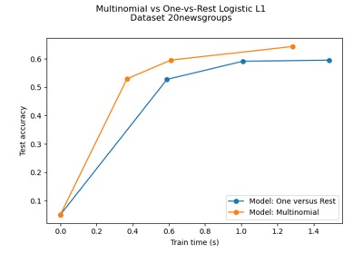
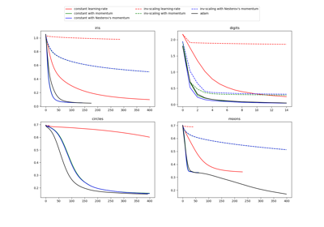
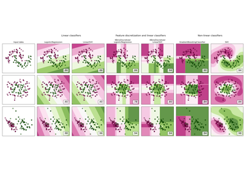

sklearn.exceptions.ConvergenceWarning¶
- class sklearn.exceptions.ConvergenceWarning[source]¶
Custom warning to capture convergence problems
Changed in version 0.18: Moved from sklearn.utils.
- Attributes:
- args
Methods
Exception.with_traceback(tb) -- set self.__traceback__ to tb and return self.
- with_traceback()¶
Exception.with_traceback(tb) – set self.__traceback__ to tb and return self.
Examples using sklearn.exceptions.ConvergenceWarning¶


Multiclass sparse logistic regression on 20newgroups
Multiclass sparse logistic regression on 20newgroups

Compare Stochastic learning strategies for MLPClassifier
Compare Stochastic learning strategies for MLPClassifier


Feature discretization